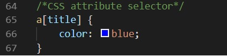
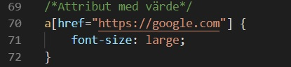
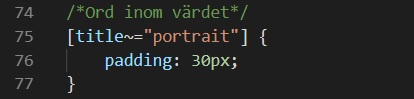
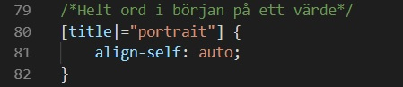
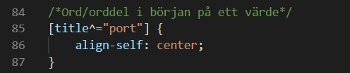
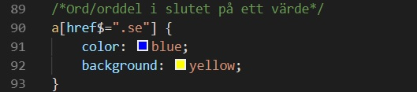
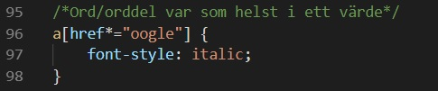

Av Eddie och Nils
Attribute selectorn används genom att först skriva elementets namn och sedan det attribut elementet ska ha för att väljas av selectorn i [] t.ex. "a[title]" (alla a-element med attributet "title"). .
Med [attribute="value"] väljs inte bara elementets attribut utan också dess specifika värde. T.ex. "a[href="https://www.google.com"]"
[attribute~="value"] väljer element baserat på attribut och ett specifikt ord som förekommer i dess värde. T.ex. "[title~="portrait"]. Alla element som har attributet "title" och det attributet ska dessutom innehålla ordet "portrait" i sitt värde.
[attribute|="value"] används till att välja element vars attribut har ett värde som börjar med ett specifikt helt(!) ord. T.ex. "[title|="portrait"]. Alla element med attributet "title", som i sin tur innehåller ordet "portait" i början på sitt värde (title="portait-photo" t.ex.).
Genom att använda [attribute^="value"] väljs ett element baserat på början på dess värde. Det behöver alltså inte vara ett helt ord. "[title^="port"]" skulle välja alla element med ett attribut vars värde börjar med "port". Detta skulle kunna vara "portrait" t.ex.
[attribute$="value"] fungerar på samma sätt som föregående selector men istället för att titta på början av ett värde tittar den på slutet. Värdet behöver inte vara ett helt ord.
[attribute*="value"] kommer leta efter ett ord eller en orddel i hela elementets attributvärde. Alltså kan [title^="tra"] hitta "portait", "transport" eller "train" osv.
